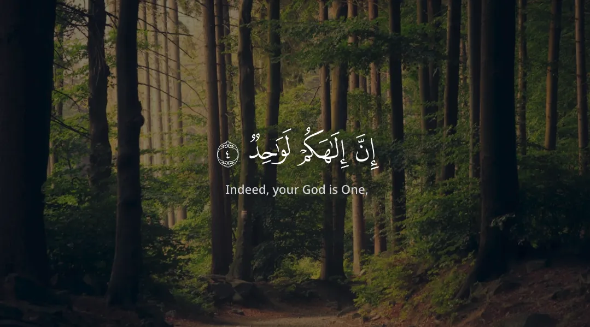
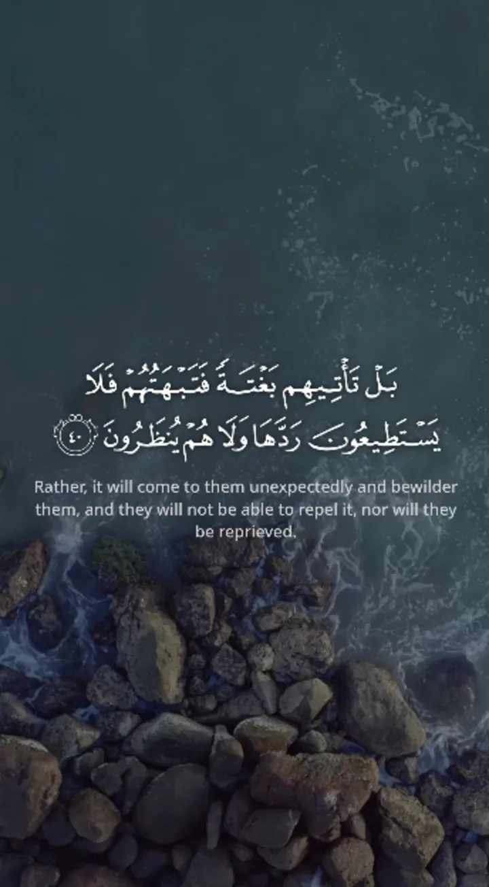
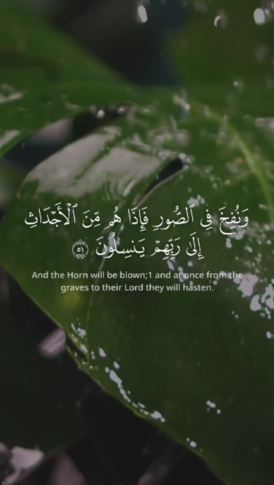
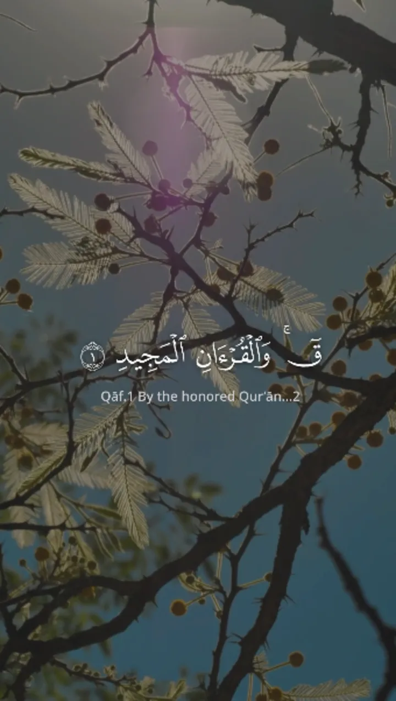

حوّل التلاوة إلى فيديو يخطف القلوب
في
ثوانٍ معدودة
استديو متكامل لتحويل التلاوات الصوتية إلى مرئيات مذهلة. مزامنة تلقائية للآيات، خطوط عثمانية عالية الدقة، وتصدير فوري لمنصات التواصل.
+30,000 فيديو قرآني تم إنشاؤه

أمثلة من إبداعات مستخدمينا



مميزات Tarteel Studio
مزامنة ذكية سحرية
نظام ذكي يربط الصوت بالنص القرآني تلقائياً بدقة عالية مع إمكانية التعديل اليدوي السلس. وداعاً لساعات المونتاج الطويلة!
تخصيص كامل للهوية
تحكم في الخطوط، الألوان، الخلفيات، والمؤثرات البصرية لتناسب هويتك وتتميز عن غيرك.
تصدير فوري وسريع جداً
ريندر يدعم دقة 4K ومعدل إطارات 60fps لنتائج سينمائية ترفع من جودة محتواك على منصات التواصل
خطط الاشتراك
الباقة المجانية
للبدء في تجربة إنشاء الفيديوهات القرآنية.
- تصدير عدد مفتوح من الآيات للمقطع
- وصول لجميع القراء المتاحين أونلاين
- خلفيات وخطوط عثمانية عالية الدقة
- ظهور شعار Tarteel Studio
- الميزات الاحترافية غير متاحة
بدون بطاقة ائتمانية للتجربة المجانية
الباقة الاحترافية (شهري)
لصناع المحتوى القرآني والمهتمين بنشر القرآن.
149 جنيه / شهر
أقل من 5 جنيه يوميًا (داخل مصر)
$6.99 / month
الدفع الدولي
- جميع الميزات الاحترافية
- عدد لا محدود من المقاطع
- إزالة شعار Tarteel Studio
- رفع تلاواتك الخاصة والمزامنة اليدوية
- إضافة شعارك الخاص (علامة مائية)
- إضافة موجات صوتية (Waveform)
- تقسيم الآيات الطويلة بذكاء
 مدعوم من
مدعوم من 
الباقة الاحترافية (سنوي)
لصناع المحتوى المستمرين ووفر أكثر من شهرين مجاناً.
999 جنيه / سنة
وفر 789 جنيه مقارنة بالشهري
$59 / year
Save $25 (International)
- جميع الميزات الاحترافية
- عدد لا محدود من المقاطع
- إزالة شعار Tarteel Studio
- رفع تلاواتك الخاصة والمزامنة اليدوية
- إضافة شعارك الخاص (علامة مائية)
- إضافة موجات صوتية (Waveform)
- تقسيم الآيات الطويلة بذكاء
مدعوم من
يثق بنا صناع المحتوى
الأسئلة الشائعة
هل موقع Tarteel Studio مجاني؟
نعم، يوفر Tarteel Studio باقة مجانية تتيح لك تصميم فيديوهات قرآنية وتصدير عدد لا محدود من الآيات للمقطع الواحد بخطوط عثمانية عالية الدقة. كما تتوفر باقة احترافية للميزات المتقدمة وتصدير مقاطع أطول.
كيف أقوم بتنزيل الفيديو بعد تصميمه؟
بعد الانتهاء من تخصيص الفيديو واختيار الآيات، اضغط على زر "تصدير المقطع". ستبدأ عملية المعالجة مباشرة في متصفحك، وبمجرد انتهائها سيظهر لك زر "تحميل الفيديو" لحفظه على جهازك بصيغة MP4.
هل يمكنني رفع تلاوة صوتية خاصة بي؟
نعم، تتيح لك النسخة الاحترافية (Pro) رفع ملفاتك الصوتية (MP3/WAV) واستخدام أداة المزامنة اليدوية الذكية لربط الصوت بالآيات بكل سهولة ودقة.
ما هي المنصات المدعومة لمشاركة الفيديوهات؟
يدعم الاستوديو تصدير الفيديوهات بمقاسات متعددة لتناسب جميع المنصات مثل: الطولي 9:16 (Reels، TikTok، YouTube Shorts)، المربع 1:1 أو البورتريه 4:5 (Instagram Post)، والعرضي 16:9 (يوتيوب العادي).
هل أحتاج إلى تحميل أي برامج لاستخدام Tarteel Studio؟
لا، Tarteel Studio يعمل بالكامل عبر المتصفح (أونلاين). لست بحاجة لتحميل أو تثبيت أي برامج، فقط سجل دخولك وابدأ التصميم مباشرة من أي جهاز.
ما هي جودة الفيديوهات التي يمكنني تصديرها؟
يمكنك تصدير الفيديوهات بجودات متعددة تبدأ من 480p وحتى 4K، مع دعم معدل إطارات يصل إلى 60 إطاراً في الثانية (60fps) لضمان أعلى دقة وسلاسة في الفيديو النهائي.
هل أستطيع تغيير ألوان الخطوط والخلفيات؟
بالتأكيد! يوفر لك الاستوديو تحكماً كاملاً في ألوان النصوص، والظلال، واختيار خلفيات جاهزة عالية الدقة أو رفع خلفياتك الخاصة (صور أو فيديوهات).